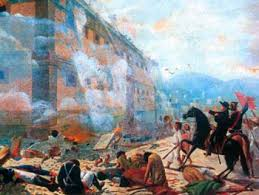
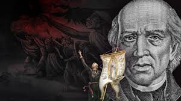

LA TOMA DE ALHONDIGA DE GRANADITASCorría el año de 1810 y el aire que se respiraba en la Nueva España estaba cargado de tensión y descontento. Tras el famoso Grito de Dolores el 16 de septiembre, el cura Miguel Hidalgo y el capitán Ignacio Allende habían logrado reunir a una inmensa multitud de hombres y mujeres, en su mayoría campesinos e indígenas, que marchaban armados con lo que tenían a mano: palos, piedras, machetes y algunas pocas armas de fuego. Su siguiente destino era la rica y próspera ciudad de Guanajuato, un centro minero de gran importancia para el virreinato. Al enterarse del avance de esta inmensa fuerza, el intendente de la ciudad, Juan Antonio Riaño, tomó una decisión que marcaría la historia. Sabedor de que no podría defender toda la ciudad con sus escasos recursos, ordenó refugiar a las familias españolas, los tesoros reales y a su pequeña guarnición militar en la Alhóndiga de Granaditas. Este edificio, de sólidos muros de piedra y estilo neoclásico, había sido inaugurado apenas un año antes como granero público y, curiosamente, el propio Hidalgo había colaborado en su construcción como asesor técnico. Riaño confiaba en que la fortaleza del lugar resistiría cualquier ataque hasta que llegaran refuerzos desde la capital. |
 |
|---|
La mañana del 28 de septiembre, la inmensa masa insurgente llegó a los alrededores de Guanajuato. Se estima que sumaban cerca de cien mil personas, una multitud que asustó a los que se encontraban dentro de la alhóndiga. Antes de iniciar las hostilidades, Hidalgo envió un mensaje pidiendo la rendición incondicional, ofreciendo respetar las vidas de los que allí se encontraban si entregaban el recinto sin derramamiento de sangre. Sin embargo, Riaño, un hombre de lealtad firme a la corona española, rechazó el ultimátum y ordenó a sus hombres prepararse para el combate. Eran apenas unos 370 soldados y unos 200 civiles armados frente a una marea humana. El ataque comenzó alrededor de las ocho de la mañana. Desde las azoteas y ventanas de la alhóndiga, los defensores realistas abrieron fuego, deteniendo los primeros intentos de acercamiento. La batalla fue feroz y desigual; aunque los insurgentes tenían la fuerza del número, carecían de disciplina y armamento adecuado, mientras que los soldados realistas, aunque pocos, estaban mejor entrenados y protegidos por las gruesas paredes de piedra. Durante horas, el enfrentamiento se mantuvo estancado, pero la situación cambió drásticamente hacia el mediodía. En medio del fragor de la batalla, una bala alcanzó al intendente Riaño. Las versiones varían sobre si el disparo vino del bando insurgente o incluso de sus propios hombres al intentar evitar una rendición, pero lo cierto es que su muerte fue instantánea y provocó una gran confusión dentro del edificio. Sin su líder, el grupo dividió sus opiniones: mientras los civiles y sus familias, aterrorizados, pedían que se rindieran, los militares insistían en seguir combatiendo.
Ante la dificultad de romper la defensa, surgió un acto que pasaría a la leyenda. Un minero local llamado Juan José de los Reyes Martínez, conocido popularmente como "El Pípila", se dio cuenta de que la puerta principal de madera era el punto débil. Cuenta la historia que, para protegerse de la lluvia de balas, colocó una pesada losa de piedra sobre su espalda, tomó una antorcha encendida y, agachándose, avanzó con valentía hasta la entrada. A pesar del fuego enemigo, logró llegar hasta la puerta y prenderle fuego. Las llamas pronto consumieron la madera, abriendo un paso hacia el interior. Lo que siguió fue un episodio trágico y violento. Al ver la puerta abierta, la multitud insurgente irrumpió en el edificio con una furia acumulada por años de opresión y por las horas de combate. La desigualdad era abrumadora y la situación se salió de control rápidamente. No solo se enfrentaron a los soldados que seguían resistiendo, sino que la violencia se ensañó también con los civiles refugiados, incluyendo mujeres, ancianos y niños. La masacre duró varias horas, extendiéndose hasta cerca de las cinco de la tarde, cuando finalmente los insurgentes lograron tomar control total del recinto.
Pero la violencia no terminó con la toma de la alhóndiga. Una vez caído el edificio, el desorden se extendió por toda la ciudad de Guanajuato. Durante los días siguientes, se produjo un saqueo generalizado de las casas, comercios y oficinas pertenecientes a los españoles y a las autoridades realistas. Hidalgo, Allende y los demás líderes intentaron por todos los medios restablecer el orden y detener los saqueos, pero la situación se les escapó de las manos, ya que la multitud, animada por la victoria y el deseo de justicia, no acataba órdenes fácilmente. Este hecho generó críticas incluso dentro del propio movimiento independentista, pues muchos consideraron que la violencia había sobrepasado los límites de lo necesario para la lucha. Militarmente, la toma de la Alhóndiga fue la primera gran victoria de la insurgencia, demostrando que el movimiento tenía un apoyo popular masivo y capacidad para conquistar plazas fuertes. Sin embargo, también reveló la debilidad de Hidalgo para controlar a una fuerza tan heterogénea y carente de disciplina. Para el bando realista, los sucesos de Guanajuato sirvieron para endurecer su postura y justificar una represión brutal contra los rebeldes. Además, la caída de la ciudad permitió a los insurgentes hacerse de importantes recursos económicos y materiales, pero también aceleró la organización del ejército virreinal para detener su avance.
| Poco después de estos hechos, Hidalgo y sus tropas continuaron su marcha hacia la Ciudad de México, aunque su camino se vería truncado poco después. Con el paso de los años, la Alhóndiga de Granaditas se transformó en un símbolo fundamental de la lucha por la independencia de México. La figura de El Pípila se convirtió en un ícono del valor del pueblo, y el edificio, que conserva aún las huellas de aquel enfrentamiento, se convirtió en museo y en lugar de memoria. Hoy en día, cada 28 de septiembre se conmemora esta fecha, recordando no solo el heroísmo de quienes participaron, sino también la complejidad, el dolor y la violencia que acompañaron al nacimiento de la nación mexicana. |
 |
|---|